4.2 客户终身价值建模
关于中文版
本页是英文版 Marketing Science in Python 的AI翻译。英文版为正式版本，如有出入，以英文版为准。代码、Notebook 和图片中的文字保持英文。 阅读英文版
大多数营销团队关注的是单次获客成本（CPA），它常与 CAC（客户获取成本）混用：CPA 越低，营销活动越好。客户终身价值（CLV）在分析和 SaaS 语境中常称为 LTV。它换了一个角度来看这个问题：估计每位客户长期能带来多少价值，再据此设定该细分群体的 CPA 上限。
本章展示如何使用概率型 BTYD 模型（在 PyMC-Marketing 中用 BG/NBD + Gamma-Gamma）在个体层面预测 CLV，以及如何把这些预测转化为预算决策。
配套 Notebook：sec4.2_clv_pymc_marketing.ipynb 在 Dunnhumby 数据集上拟合 BG/NBD 和 Gamma-Gamma 模型，估计 CLV，并分析人口统计细分群体。
在 GitHub 上查看
CLV 为何改变决策
设想一个通过广告和优惠券获客的时尚电商品牌。假设漏斗中有两个细分群体占主导：大学生和职场人士。首次购买的情况如下：
- 大学生：获客成本 $10，购买 $100 → ROAS 10×。
- 职场人士：获客成本 $20，购买 $100 → ROAS 5×。
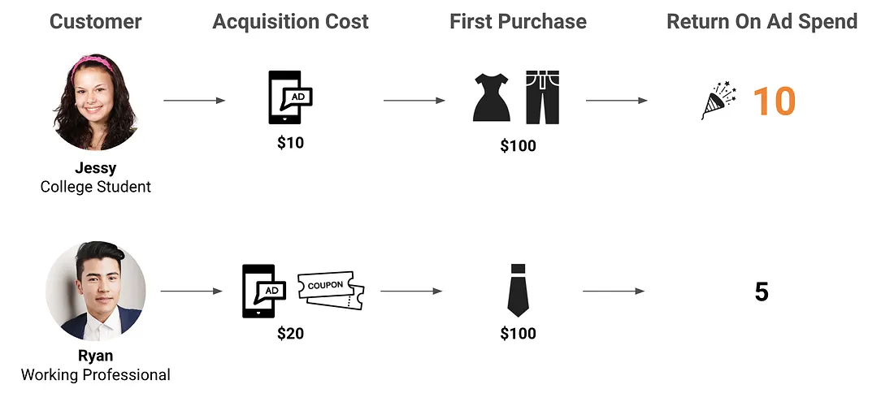
首日 ROAS 偏向学生，但终身消费把排名倒了过来。大学生在第一笔交易后就流失，因此其终身消费停留在 $100 附近。职场人士会回头并随时间花得更多，平均终身消费为 $400。
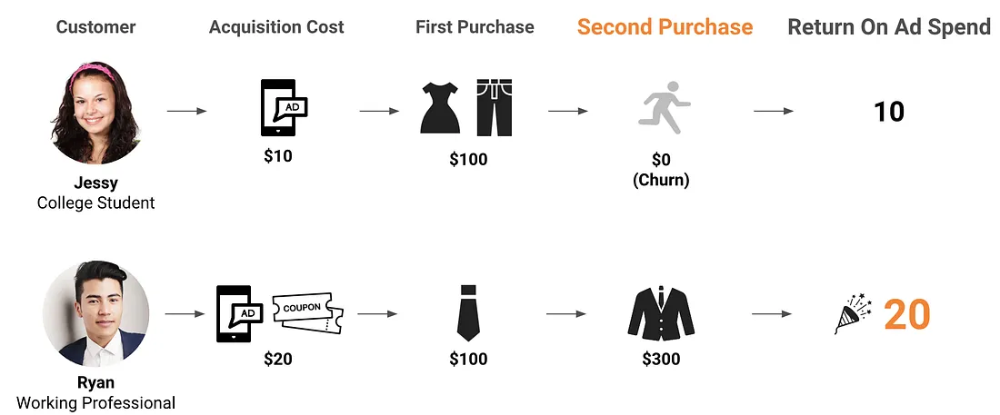
这正是 CLV 建模填补的缺口。没有它，每位客户都得到同样的 CPA 上限，也就是说为低价值客户付得太多，为高价值客户付得太少。有了它，上限随预测价值而伸缩，同样的预算就能获取更多合适的客户。
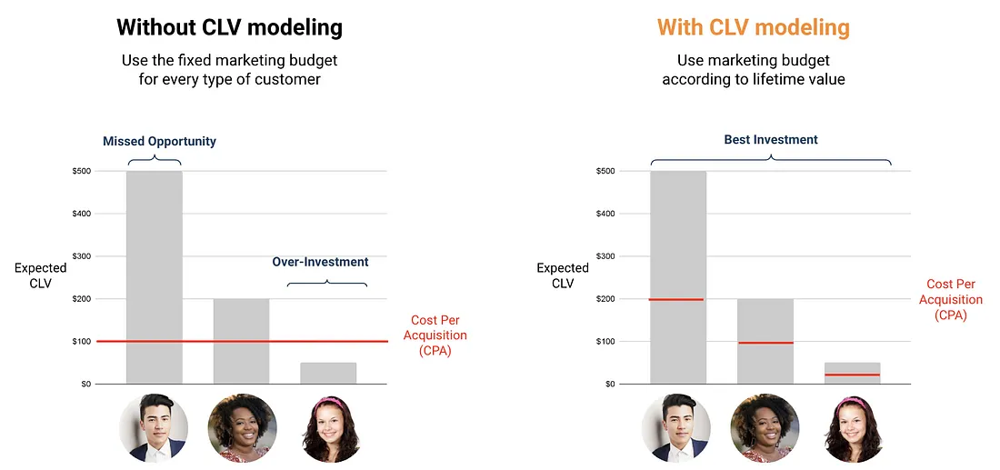
CLV 在每个阶段都有用：在获客阶段，对高价值细分群体投入更多；在增长阶段，优先为高价值客户提供服务和专属优惠；在留存阶段，把挽留客户的营销活动集中在算得过账的地方。
CLV 模型的三个目标由此直接得出：（1）在个体层面预测未来价值，（2）识别高 CLV 客户的不同之处，（3）把两者都输入到营销预算决策中。
传统公式为何不够用
教科书上的 CLV 公式有三个组成部分：
\[ \text{CLV} = \text{Average Order Value} \times \text{Purchase Frequency} \times \text{Customer Lifespan} \]
对于一个客户每单消费 $100、每年购物 4 次、保持忠诚 3 年的时尚品牌：\(\text{CLV} = 100 \times 4 \times 3 = \$1{,}200\)。这对粗略估算业务规模很有用，但对客户层面的决策来说太粗糙了，原因有三。
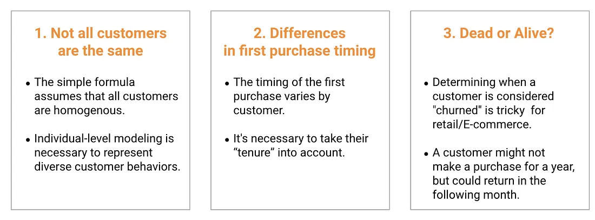
局限 1：客户并非人人相同。对整个客户群取平均，会同时歪曲分布的两端：
| 客户群体 | 客户数 | 平均 CLV | 总销售额 |
|---|---|---|---|
| 普通客户 | 90 | $100 | $9,000 |
| 大额购买客户 | 10 | $10,000 | $100,000 |
| 合计 | 100 | $1,090 | $109,000 |
$1,090 的总体平均值掩盖了两个群体之间的差异。你需要个体层面的 CLV。
局限 2：首次购买时间不同。一年前开始购买的客户有整整一年的可观测数据；三个月前开始的客户则少得多。除非按在册时长做调整，否则原始的频率计数会把“参与度低”和“新来的”混为一谈。
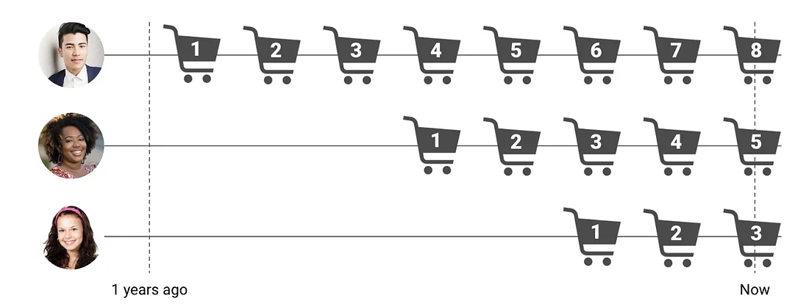
局限 3：流失不可观测。在订阅业务中，流失是可观测的：客户取消订阅。在零售和电商中则不然。一位客户是否算“活着”，取决于他自己的模式。每月购买的人沉默三个月是危险信号；每半年购买一次的人跳过三个月则很正常。
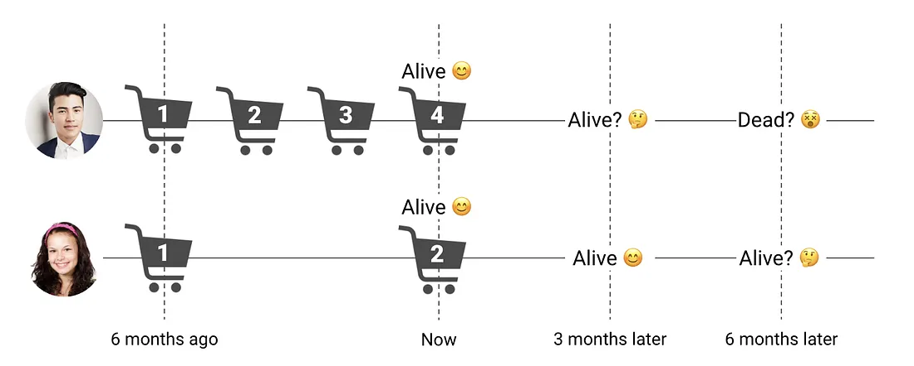
模型必须考虑客户之间购买行为的差异、每位客户自首次购买以来的时间，以及客户可能已经停止购买的情形。BTYD 把这三点都构建进同一个个体层面的模型。
BTYD：BG/NBD + Gamma-Gamma 框架
Buy-Till-You-Die（BTYD）建模结合了两个概率模型：
- BG/NBD 预测客户仍然活跃的概率及其未来交易次数。
- Gamma-Gamma 估计其平均订单金额。
两者相乘，再按时间折现，你就得到了个体层面的 CLV，且每个估计值都带有可信区间。
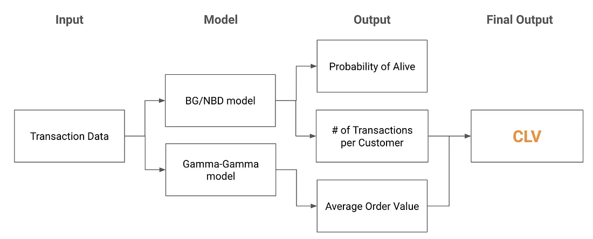
BG/NBD 模型
BG/NBD 模型 (Fader 等 2005年) 假设客户生命周期中存在两个潜在过程：
- 购买过程。客户活跃期间，购买遵循速率为 \(\lambda\) 的泊松过程。
- 退出过程。每次购买之后，客户有概率 \(p\) 永久转为不活跃。
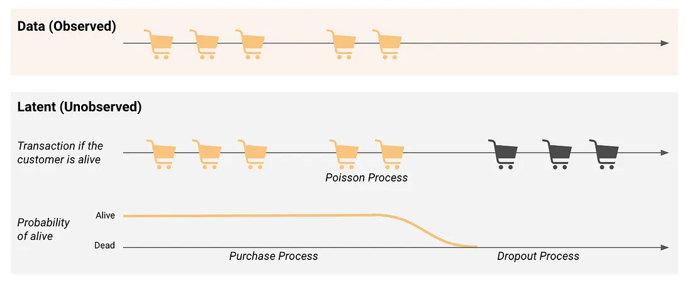
\(\lambda\) 和 \(p\) 都因客户而异。贝叶斯层次结构处理了这一点：\(\lambda\) 的值在整个客户群上服从 Gamma 分布，\(p\) 的值服从 Beta 分布。模型学习总体层面的模式，同时仍然给出个体估计。
一个有用的推论：客户活着的概率会随时间演变。距上次购买的间隔越长，它就越低；而新购买一到来，它又立刻跳回去。
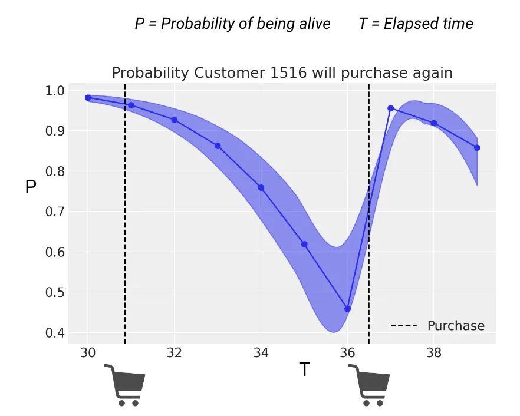
Gamma-Gamma 模型
Gamma-Gamma 模型 (Fader 和 Hardie 2013年) 估计平均订单金额。它使用两层贝叶斯层次结构：每位客户一个 Gamma 分布（其自身的消费模式），再在整个客户群上套一个 Gamma 分布（客户之间的差异）。
何时 BTYD 不是合适的工具
BTYD 假设的是非契约型场景：流失从未被观测到，因此模型从购买间隔中推断它。表 2 列出了其他模型更适合的场景。
| 场景 | 流失 | 模型 |
|---|---|---|
| 零售与电商（非契约型） | 从购买间隔推断 | BG/NBD + Gamma-Gamma |
| SaaS 与订阅（契约型） | 明确的取消事件 | 偏移 Beta-几何（sBG） |
| 用随时间变化的协变量解释流失驱动因素 | 可观测，或按规则定义 | 生存分析（Cox 比例风险模型） |
| 丰富的行为特征和生产级 ML 流水线 | 两者均可 | 针对固定预测期目标的 ML 回归（例如 LightGBM） |
使用 PyMC-Marketing 实现
PyMC-Marketing 构建在 PyMC 之上，取代了 lifetimes 库（现已进入维护模式）。其标志性特性是内置的不确定性量化：每个 CLV 估计值都附带 HDI 区间，因此你可以看到每位客户的估计值周围有多大的不确定性。
CLV 模型只需要销售交易数据：客户 ID、交易日期、交易金额。两到三年的历史通常就足够了。
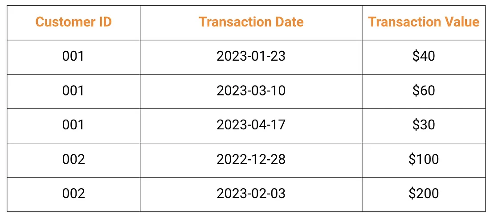
数据与 RFM-T 汇总
我们使用 Dunnhumby “The Complete Journey” 食品杂货零售数据集，也就是传统细分 notebook（sec4.1_traditional_segmentation.ipynb）所用的同一数据集。这让你可以把传统细分流水线中的大约 2,500 个家庭原样带入 CLV；在标准清洗（去除负值交易和数量为零的行）和 RFM-T 构建之后，配套 Notebook 在全部 2,500 个家庭上拟合 BG/NBD，而 Gamma-Gamma 消费模型使用其中至少有一次复购的 2,497 个家庭。
| 指标 | 定义 |
|---|---|
| 最近购买时间 | 客户首次购买与最近一次购买之间的时长 |
| 购买频率 | 复购次数（总购买次数减一） |
| 消费金额 | 客户复购的平均金额（不含首次购买） |
| 在册时长 | 客户首次购买与研究期结束之间的时长 |
在第 4.1 节中，最近购买时间指距上次购买的天数。在 BTYD 惯例下（PyMC-Marketing 的 rfm_summary 遵循这一惯例），它是客户首次购买到最近一次购买之间的时间跨度，因此这个值越高，意味着客户越近期仍在活跃。
from pymc_marketing import clv
data_summary = clv.utils.rfm_summary(
data, # one row per purchase
customer_id_col="CustomerID",
datetime_col="date",
monetary_value_col="TotalSales",
time_unit="D",
)拟合与估计 CLV
# BG/NBD: purchase frequency and P(alive)
bgm = clv.BetaGeoModel()
bgm.fit(data=data_summary)
# Gamma-Gamma: average order value, fit on repeat customers only
repeat = data_summary.query("frequency > 0 and monetary_value > 0")
gg = clv.GammaGammaModel()
gg.fit(data=repeat)
# CLV: expected purchases times expected spend, discounted at 1% a month
clv_estimate = gg.expected_customer_lifetime_value(
transaction_model=bgm,
data=data_summary,
future_t=120, # 120 months = 10 years
discount_rate=0.01,
time_unit="D",
)输出不仅包含点估计，还包含 HDI（最高密度区间）的上下界。在这个 API 中，future_t 以月为单位，而 time_unit="D" 告诉模型 RFM-T 输入是以天为单位的。这些区间只量化了购买时间方面的不确定性：消费的后验分布在折现之前被汇总为其均值，因此请把它们视为真实不确定性的下界。
请明确选择预测期（horizon）；future_t=120 不是一个可以照单全收的默认值。这个数据集覆盖大约 23 个月，因此 120 个月的预测大约延伸到观测窗口的五倍之外。估计值保持有界，因为 BG/NBD 把客户退出内置进了预测，但这个退出率本身又是从这 23 个月中估计出来的。配套 Notebook 对同一个后验分别按 3 年、5 年和 10 年重新折现。在这个数据集上，客户排名在三者之间几乎不动，因此基于排名的定向对这些测试过的预测期不敏感；10 年估计值的中位数约为 3 年估计值的 2.23 倍，因此任何把 CLV 转化为美元上限的做法都必须说明所用的预测期。
存活概率矩阵
要快速了解 BG/NBD 模型学到了什么，可以看存活概率矩阵。一个轴是最近购买时间，另一个轴是购买频率，颜色表示 P(alive)。记住这里的最近购买时间是上表中的 BTYD 定义，即首次购买到最后一次购买的时间跨度，所以最近购买时间值高意味着客户直到最近还在购买，与营销 RFM 中该词的用法正好相反。请分别解读四个角落。忠诚回头客（高频率、高最近购买时间）购买频繁且仍然活跃。有流失风险的忠诚客户（高频率、低最近购买时间）曾经买得很多，然后沉寂了。一次性过客（低频率、低最近购买时间）在获客后立即买了一两次，然后就停止了。历史稀薄的客户（低频率、高最近购买时间）购买次数太少而无法确定，但最近一次购买很新，所以 P(alive) 得出的结果很高；图中把这个角落标为新客户。
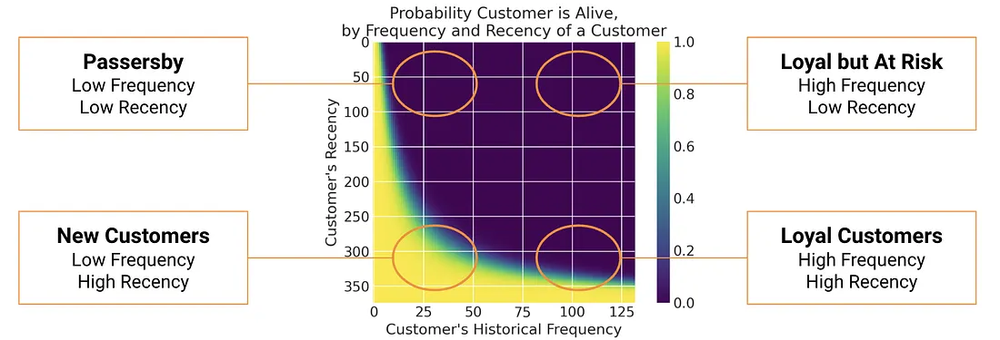
营收 CLV → 利润 CLV
Gamma-Gamma 模型估计的是每笔交易的营收。要让 CLV 对预算决策有用，需要把营收换算成利润：
\[ \text{CLV}_{\text{profit}} = \text{CLV}_{\text{revenue}} \times \text{Gross Margin} \]
如果各产品品类的利润率差异很大，就根据购买历史计算客户专属的利润率，而不是使用一个统一的比率。
结合细分群体与 CLV
把第 4.1 节的 segment_id 与每位客户的 CLV 估计值关联起来。这样你就得到了本部分一直在构建的运营表：这是什么样的客户、他们值多少钱，以及企业应该为他们做什么。
表 4 展示了食品零售客户家庭的这张表：按 Notebook 假设的 28% 毛利率计算的十年利润 CLV。
| 细分群体 | 客户数 | 平均利润 CLV | 保守利润 CLV |
|---|---|---|---|
| 重度忠诚客户 | 610 | $5,659 | $5,368 |
| 高频小篮客户 | 567 | $2,553 | $2,454 |
| 偶发大篮客户 | 539 | $1,537 | $1,515 |
| 折扣倾向客户 | 478 | $934 | $924 |
| 休眠客户 | 287 | $271 | $267 |
重度忠诚客户的价值约为休眠客户家庭的二十倍，因此，统一的每客支出上限对下方各行来说过高，对最上方一行来说又过低。在这一上限之内实际花多少，取决于营销活动的增量效果。
人口统计特征仍然有助于描述或触达一个细分群体，但主要的决策层是行为细分群体 × 预测价值。配套 Notebook 把 CLV 估计值与 Dunnhumby 的 hh_demographic.csv 关联起来，让你可以沿着收入等人口统计维度刻画每个细分群体：这对挑选创意和渠道有用，对设定预算则用处不大。
让 CLV 发挥作用
一旦你有了每位客户的 clv_estimate，三个应用就不再需要进一步建模，不过每个应用需要的都不只是这个得分。CPA 上限需要上文的利润率换算和一个明确说明的预测期；流失预警需要按客户 ID 与 CRM 关联以及一个阈值；群组预测需要每位客户的获客日期和财务部门的规划期。这些模式适用于任何 CLV 得分。
用于广告出价的 CPA 上限
把最大 CPA 设为预测利润 CLV 的一个比例：
\[ \text{Allowable CPA} = \text{CLV}_{\text{profit}} \times \text{Target acquisition ratio} \]
如果一个细分群体的预测利润 CLV 为 $200，而你的目标获客比率是 33%，那么最大 CPA 就是 $66。在不确定性下出价时，使用预测利润 CLV 的保守下界而不是均值。许多广告平台可以接收价值信号用于基于价值的出价或受众规则，但具体实现取决于平台。
用于 CRM 的流失预警
标记那些 P(alive) 在 30 天内下降超过 30 个百分点的客户。信号在于变化速率，而不是绝对水平。一位 P(alive) 在一个月内从 0.85 跌到 0.40 的客户，比一位六个月来稳定在 0.35 的客户紧急得多。前一位客户正在从先前较高的参与水平上远离；后一位客户一直都是低频买家。
用于财务部门的群组预测
财务部门按预算周期而不是按客户生命周期做规划，因此要按获客群组（cohort）汇总个体 CLV 估计值，并预测 12、24 和 36 个月的营收。附上 HDI 区间，让财务部门知道这些是概率性估计，而不是固定目标。这回答了财务部门关于一个季度获客支出预期回报的问题，而且用的是财务部门做规划时所用的单位和时间框架。
监控
按群组比较 3、6 和 12 个月时的预测营收与实际营收。如果比率偏离超过 ±20%，就重新训练。同时检查 CLV 预测是否对受保护群体存在偏差：在服务不足的细分群体上训练出的模型会通过预测更低的 CLV、设定更低的获客出价而延续这种偏差。
要点
- CLV 用与每位客户价值成比例的支出取代了统一的 CPA 目标；单一的上限会为低价值客户付得太多，为高价值客户付得太少。
- 在非契约型场景中，BG/NBD 仅凭交易数据对未来购买建模，Gamma-Gamma 对消费建模。每位客户都得到一个可信区间，因此请根据该区间保守的下界来设定出价。
- 在 CLV 用于设定 CPA 上限之前，先把营收 CLV 换算成利润 CLV，并说明预测期：十年估计值的中位数约为三年估计值的 2.23 倍，尽管排名几乎不动。